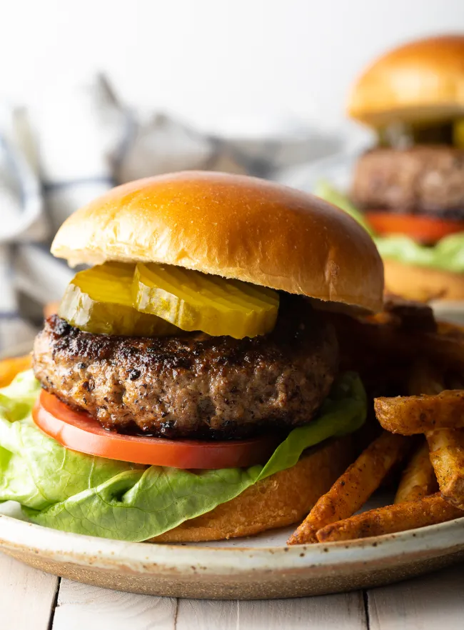

Hamburgers

Description
A hamburger or simply burger is a food consisting of fillings—
usually a patty of ground meat, typically beef—
placed inside a sliced bun or bread roll.
Ingredients
- Ground Chuck
- Panko bread crumbs
- Worcestershire Sauce
- Egg
- Milk
- Seasonings
Steps
- Set out a large mixing bowl and add in the ground beef, crushed crackers, egg, Worcestershire sauce, milk, and spices.
- Press the meat down in the bowl, into an even disk.
- Place the formed patties on a baking sheet.
- Preheat the grill to medium heat, approximately 350-400 degrees.
- Grill the patties for 3-4 minutes per side.
- Enjoy!